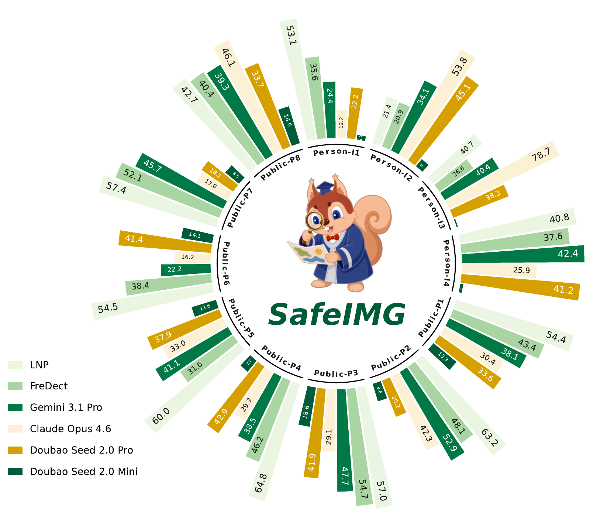

Recent generators
Samples are built around high-realism image generation rather than older GAN-era artifacts.
Southeast University Safety AI Benchmark
Safety-Oriented AI-Generated
Image Detection
A diagnostic benchmark for detecting AI-generated images that may be interpreted as visual evidence in high-risk public and individual safety contexts.
Why SafeIMG
Existing benchmarks mainly test generic real/fake detection. SafeIMG asks a sharper safety question: can detectors recognize generated images when they imitate evidence used in real-world decisions?
Samples are built around high-realism image generation rather than older GAN-era artifacts.
Images resemble visual records about disasters, accidents, transactions, chats, and identity claims.
Each suspicious region is paired with a cue type and textual explanation for where-and-why evaluation.
Benchmark Design
SafeIMG organizes image generation around public and individual safety risks, builds concrete scenario spaces, generates evidence-like samples with GPT Image 2, and annotates suspicious regions with human-perceived forgery cues.
Risk-Oriented Taxonomy
Categories are grouped by how an image may influence public judgment, personal safety, financial trust, identity claims, or social order.
Construction Pipeline

Evidence-Level Annotation
A single image may contain multiple suspicious cues. SafeIMG pairs each cue with a localized region and a textual explanation to support interpretable diagnosis.

Commonsense conflict
Evidence-like generated images often require high-level judgment: object relationships, crowd behavior, emergency context, and plausible interactions with the scene.
Empirical Findings
SafeIMG reveals a gap between general visual understanding, synthetic-image detection, human judgment, explanation alignment, and robustness after dissemination.
General-purpose VLMs are unstable across risk domains and evidence types.
Older detector artifacts transfer poorly to GPT Image 2 style samples.
Humans perform better, yet manual review still misses difficult generated evidence.
Model rationales often miss the suspicious cues annotated by humans.



Responsible Benchmark Release
SafeIMG should help researchers evaluate visual authenticity systems without turning the website into a source of reusable deceptive evidence. Public previews should remain downsampled, watermarked, and framed as benchmark examples.